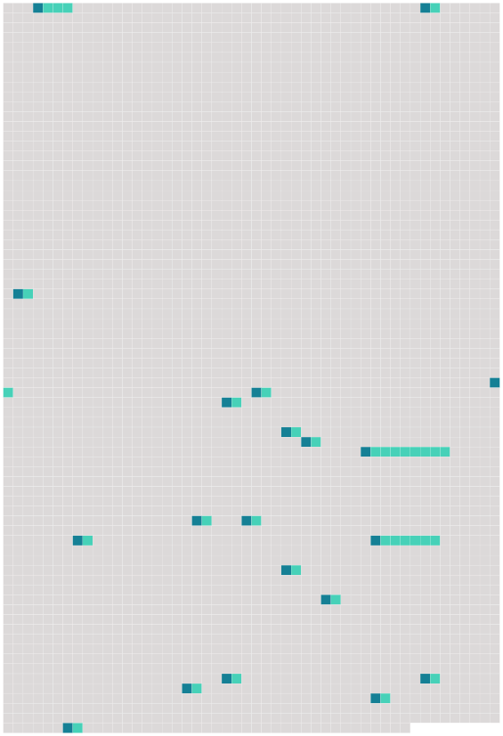

Longueur nb maillons : 20 mentions |
 |
[ article ] La tentative de suicide d'un locataire habitant au rez-de-chaussée est à l'origine [du sinistre] [71 phrases]
» [23 phrases] Il a juste dit : il y a eu [une explosion] [1 phrases]
» [5 phrases] C'est ensuite que nous avons compris que [l'explosion] venait de chez lui. [11 phrases]
» [5 phrases]
» [5 phrases]
» [13 phrases]
[ article ]
Effrayé par [l'explosion] , Polochon, un petit chat appartenant à Roxane Herbrecht a disparu. [6 phrases]
[ article ]
Dès leurs premières constatations et le recueil des premiers témoignages, les enquêteurs de la police ont privilégié l'hypothèse de la tentative de suicide pour expliquer [l'explosion du 13 rue du Tramway] [6 phrases]
provoquant ainsi l'étincelle qui a déclenché [l'explosion] [6 phrases]
Une dizaine d'heures après [l'explosion] , les locataires étaient de retour pour récupérer quelques affaires. [18 phrases]
L'occupant de l'appartement du rez-de-chaussée, à l'origine [du sinistre] , a été brûlé au visage et aux bras.
Quittant les lieux en courant, juste après [l'explosion] , il a gagné l'hôpital par ses propres moyens et y a été admis.
L'enquête de police a rapidement établi que [le sinistre] était la conséquence d'une tentative de suicide au gaz de ce jeune homme âgé de 30 ans. [3 phrases]
[L'explosion] s'est produite, vers 4 heures du matin, mardi, dans une ancienne maison de maître abritant six appartements au 13 rue du Tramway à Belfort. [4 phrases] Réveillés en sursaut, les huit locataires, voisins de l'appartement du rez-de-chaussée où [l'explosion] s'est produite, ont ouvert les yeux sur un spectacle de désolation : leur appartement n'était plus qu'un amas de ce qui restait des murs et de leur mobilier. |
 |
La ressource peut être téléchargée sur la page Ortolang
Si vous avez des questions ou vous voyez des erreurs, merci d'envoyer un mail à silvia.federzoni89@gmail.com
Site développé par S. Federzoni (contact)